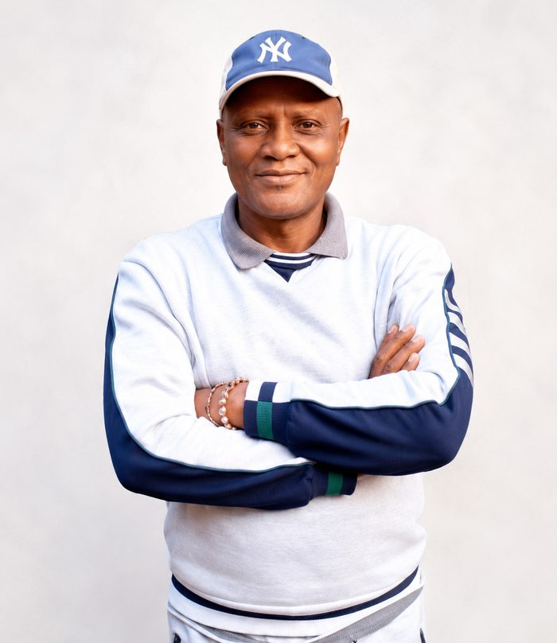
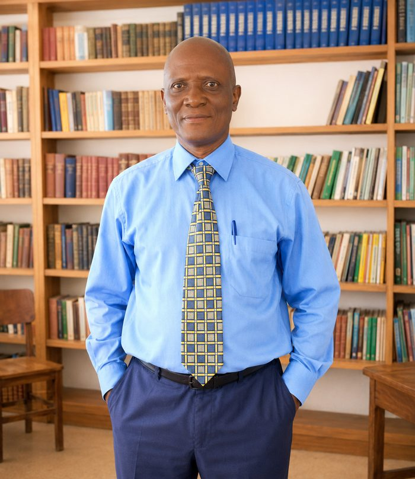
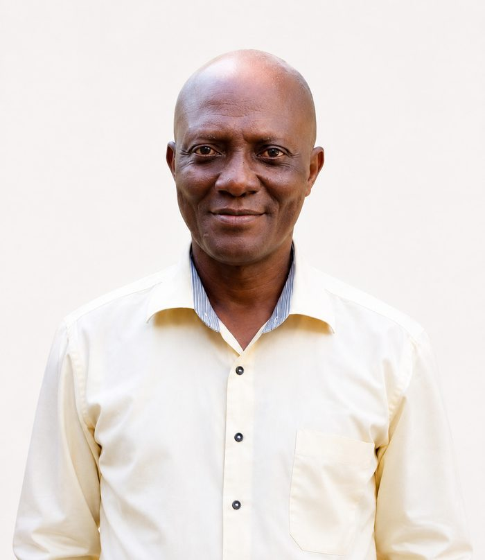

On behalf of the entire family, I stand here as his elder brother, with a heavy heart.
My brother, AKL, was more than family to us – he was our joy, our pride, and our peace. A man with a big heart and an even bigger presence, he was someone people felt seen and loved by, whether in the community, at the workplace, or at home. He was the one who always showed up, who always called to check on his brothers, and who made us laugh even on the hardest days.
To us, he will always be our brother – the one I was proud to call my twin partner as we grew up. After serving at St. Joseph's Convent in Freetown and working for years with the International Organization for Migration (IOM), he chose to come back home with me to help develop our own community, and began serving his old school, MSSK, from 2013. We lived together peacefully, like twins, advising each other and our siblings.
At home, he was my brother, my confidant, my protector, and my pride. At school, he was not only my principal but a colleague imparting knowledge – highly respected, deeply loved, and one who will be long remembered. He would often come to me for advice, just as I came to him.
He left us far too soon, but his lessons remain a fingerprint on the lives of the pupils he taught, the Unique Ambassadors brotherhood, and our family he loved.
Rest in perfect peace, beloved brother – our Unique Ambassador, our Principal. We shall meet at the beautiful shore, one day
— Idriss K. Lamin (EPD)
Brother Ansinu Kelety Lamin (AKL) was a dedicated mentor and a truly selfless brother, never one to carry himself as a "big man." If a brother was in trouble, he gave his last penny, his time, and his energy, staying by his side until the trouble passed. He quietly pushed young people towards education, encouraging one of us through the English Language paper on the WAEC exam until he got through it.
AKL had a gift for solutions and was always first to speak up with a way forward. He was family to many of us – a calming presence who could sit with you in real pain and make it feel lighter, and who gave us courage even in the middle of the Civil War.
His passing leaves a heaviness hard to put into words. We considered him a true brother, and we loved him. He will be greatly missed.
Ansinu Kelety Lamin was, in many ways, a son of this school before he ever became its Principal. He passed through these same halls as a student, and it was here that so much of who he became was first formed.
He went on to study English and Literature at Njala University College, and carried that scholarship into a career built entirely on teaching – first for many years at St. Joseph's Convent Secondary School in Freetown, and later with the International Organization for Migration (IOM), before he chose to come home and serve the school that raised him, joining our staff from the 2013/14 academic year.
He was not only a Principal to us but a colleague – eloquent, intellectually sharp, and gifted with a rare ability to analyse and make sense of even the most difficult issues. He believed that imparting knowledge was one of the greatest sources of wealth a person could have, that material things fade but the knowledge planted in a mind endures. That conviction shaped everything he gave to this school.
He served as Principal in the senior section with integrity, guiding with wisdom and helping build a future for hundreds of young scholars. Though his time at the helm was far shorter than we hoped, his lessons remain a fingerprint on the lives of every pupil he taught and every colleague he inspired.
We are proud to have shaped him, and prouder still that he chose to lead us.

Ansinu Kelety Lamin, affectionately known as AKL, was born into the Lamin and Kenneh families, a prominent and well-established family in Kailahun. He hailed from a large family with several siblings and was raised within strong bonds of family and community that remained central to his life.
Growing up in Kailahun, AKL formed relationships that endured from childhood into adulthood. Family was deeply important to him, but his understanding of familyhood extended far beyond blood relations. Throughout his life, he built lasting connections with schoolmates, colleagues, students, friends and members of Unique Ambassadors, many of whom came to regard him as family in the fullest sense of the word.
His elder brother, Idriss Kelety Lamin, remembered their relationship as exceptionally close, describing AKL as a younger brother with whom he shared a bond almost like that of twins. They lived together, advised one another and remained closely connected through family life and their shared service to education in Kailahun.
His brother, Dr Sartie Kenneh, also remembered AKL as a man who genuinely wanted to see everyone progress. He was a quick and practical thinker who, whenever confronted with a difficult issue, was often among the first to propose a solution and encourage a way forward. This optimism and concern for the advancement of others became defining qualities of his character.
From these strong family and community foundations emerged a man who devoted much of his adult life to education, mentorship, leadership and service to others. AKL became an educator, school administrator and Principal, as well as a founding member of Unique Ambassadors. Across these roles, he became known for his intellect, generosity, loyalty, selflessness, concern for others and unwavering belief in the transformative power of education and human progress.
The family of the late Ansinu Kelety Lamin (AKL) wishes to thank all who have supported them in prayer, presence and kindness during this time of bereavement. May God richly bless you.